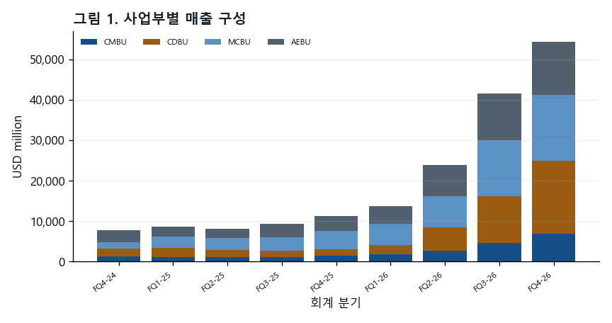
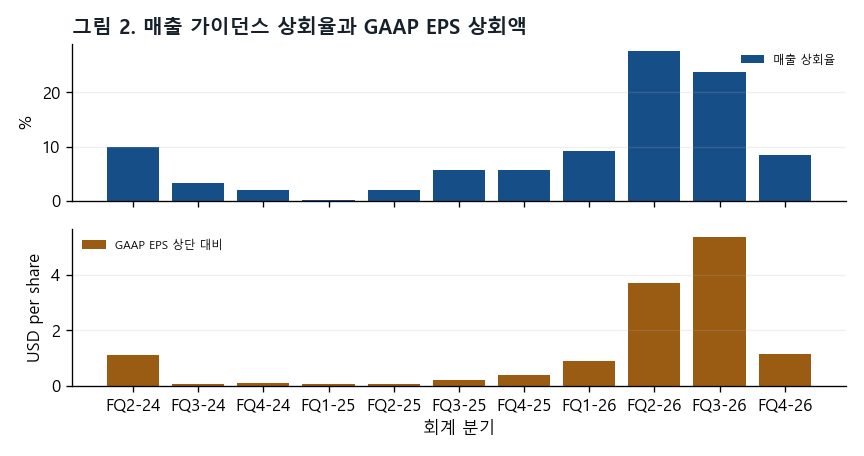
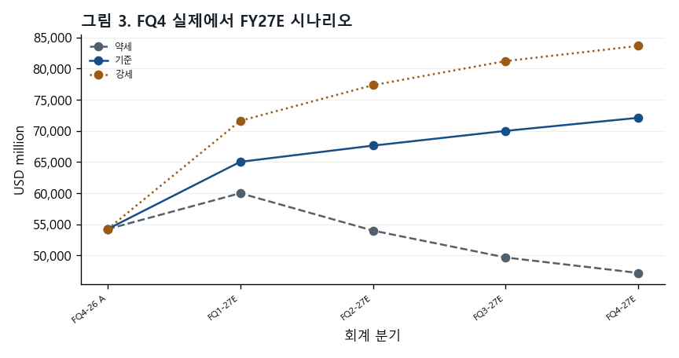
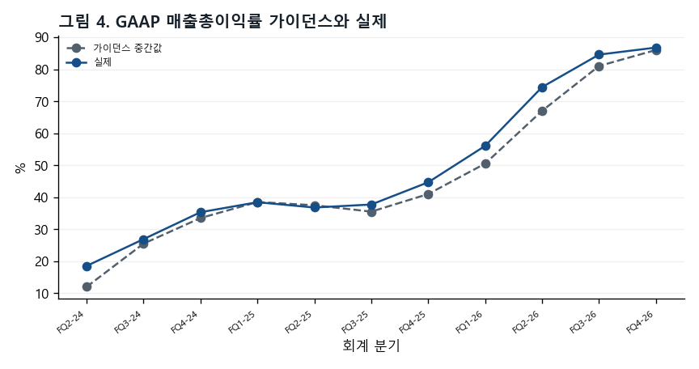
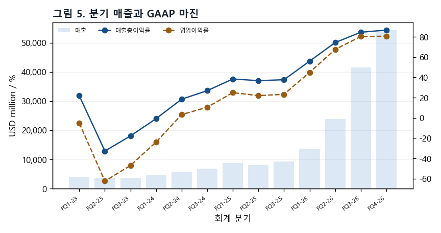
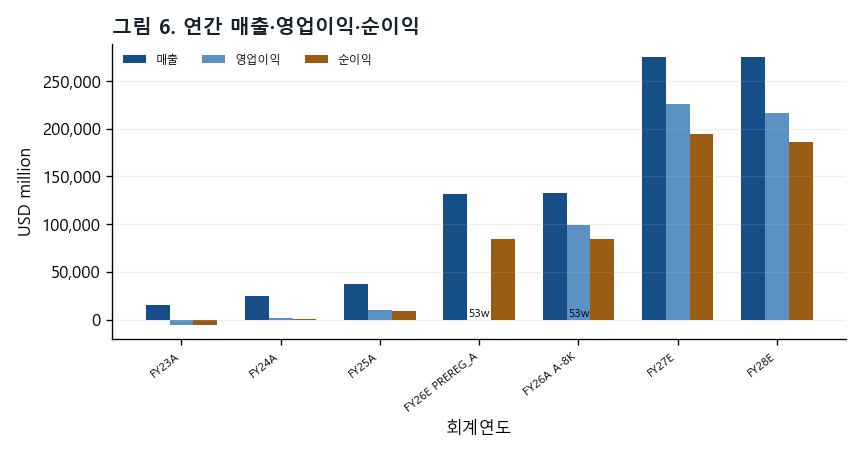
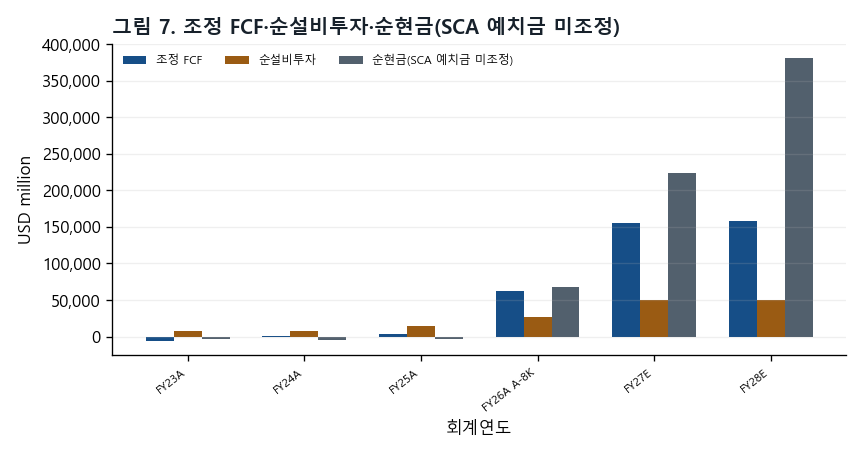
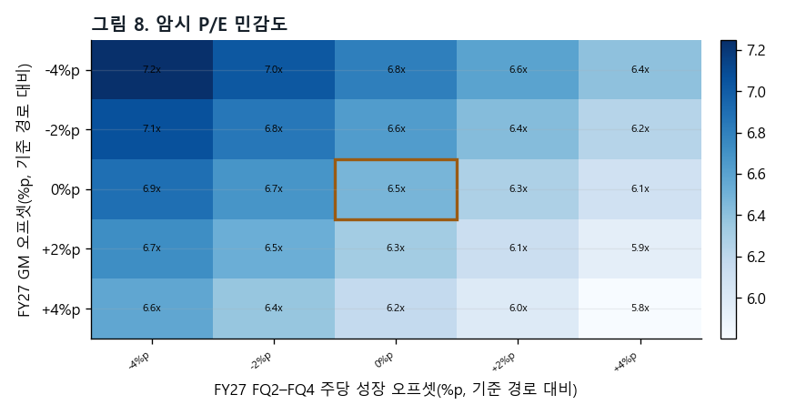

공개 자료 기반 제3자 분석이며 Micron 및 계열사가 작성·검토·승인한 자료가 아닙니다.
작성자: 김지원
발행일: 2026-10-05
자료 기준일: 2026-10-01(주가) · 2026-09-30(실적)
정보 컷오프: 2026-10-04 KST
완결성: 역사 실적, PREREG_A 채점, 발표 후 실적과 RLE
- 사전등록 전망과 발표 후 추정을 분리한다.
- 시나리오는 무가중 범위이며 확률을 두지 않는다.
- 순현금은 SCA 예치금을 조정하지 않는다.
발행 직전 확인 시각(2026-10-04T14:42:00+09:00) 현재, 작성자 김지원은 Micron Technology, Inc. (MU) 주식을 보유하지 않습니다.
사전등록 전망과 프린트 이후 실적을 분리하며, 보고서 레이어 추정치는 RLE로 명시한다.
| 항목 | 값 | 기준 |
|---|---|---|
| 기준 주가 | $1,097.39 | 2026-10-01 기준 |
| 희석 가중평균 주식수(FQ4) | 1,147M | FY2026Q4 A-8K |
| 시가총액 | USD 1,258,706 million | 기준 주가 × FQ4 희석 가중평균 주식수 |
| 회계연도 종료일 | 2026-09-03 | A-8K |
시가총액은 USD million 단위이며 기준 주가 × FQ4 희석 가중평균 주식수로 계산했다. 발행주식수 기준 시가총액이 아니다.
| 항목 | 값 | 기준 |
|---|---|---|
| FQ4 매출 | 52,860 | PREREG_A · USD million |
| FQ4 매출 | 54,229 | A-8K · USD million |
| FQ4 GAAP EPS | 32.57 | PREREG_A · USD/share |
| FQ4 GAAP EPS | $32.87 | A-8K · USD/share |
| FY26 매출 | 131,819 | PREREG_A · USD million |
| FY26 매출 | 133,188 | A-8K · USD million |
| FY27E 매출 / GAAP EPS | 274,784 / $169.05 | RLE 기준 경로 |
| FY28E 매출 / GAAP EPS | 274,784 / $162.24 | RLE 기준 경로 |
이 절은 회사 개요와 보고서의 정보 경계를 정리한다.

아래 논거는 결론이 아니라 관측 대상이다. 각 논거마다 무엇이 관측되면 그 논거가 틀린 것인지(반증 관측원)를 함께 적는다.
회사는 산업 DRAM·NAND가 두 해 모두 공급 제약 상태로 남고, 수급 균형 시점이 보이지 않는다고 했다(REM p.5).
반증 관측원: 분기 준비문에서 '공급 제약' 표현이 빠지거나, DRAM 가격 변화율이 음(−)으로 돌아서는 첫 분기.
근거: REM p.5
가이던스 중간값 $61,500M은 FQ4 실적 대비 주당 22.1% 증가다. 회사는 FY27 매 분기 순차 매출 성장을 예상했다(REM p.9).
반증 관측원: FQ1 FY27 실적이 가이던스 하단 $60,000M을 밑돈다.
근거: PR Business Outlook · REM p.9 · SCORED §8
체결된 SCA는 26건, 2030년까지 매출의 35% 이상으로 회사가 추정한다. 이 중 75%는 가격 틀이 정해져 있고, 다수가 하한·상한 밴드다(REM p.3).
반증 관측원: SCA 해지·재협상 공시, 또는 고객 예치금 잔액 $12,895M의 감소.
근거: REM p.3 · PR 재무상태표
회사는 FQ1 이후 GM 상승을 예고하면서도 가격 상승률은 더 완만해진다고 했다(REM p.9).
반증 관측원: FQ2 FY27 준비문의 DRAM 가격 상승률이 FQ4 FY26(high-teens%)보다 높다.
근거: REM p.7·p.9
가격 틀이 정해진 SCA 매출의 다수는 상한이 있는 밴드다. 시장가가 상한을 넘으면 그 부분은 시장가를 따라가지 못한다(REM p.3).
반증 관측원: 회사가 상한 도달 매출 비중을 공시하고, 그 비중이 작다.
근거: REM p.3
FY27 opex는 약 $2.5B 증가(REM p.9), 순 capex는 상반기만 약 $25B다(REM p.10). FQ4 GAAP opex는 가이던스보다 77.2% 많았다(SCORED §4).
반증 관측원: FY27 분기 GAAP opex가 RLE 경로($10,353M)를 밑돈다.
근거: REM p.9–10 · SCORED §4
사전등록 전망과 발표 실적은 같은 기준으로 나란히 비교한다.

| 지표 | 실적 | 사전등록 기준 | 오차 | 절대백분율오차 |
|---|---|---|---|---|
| 매출 | 54,229 | 52,860 | 1,369 | 2.5% |
| GAAP 희석 EPS | $32.87 | $32.57 | $0.30 | 0.9% |
| 비GAAP 희석 EPS | $33.42 | $32.84 | $0.58 | 1.7% |
| GAAP 영업비용 | 3,296 | 1,860 | 1,436 | 43.6% |
가이던스 라벨: 4/4 적중
밴드 커버리지: PASS · 49,000–58,223 · $29.33–$36.66
GAAP EPS 네 레버 귀인: +$0.84 / −$0.73 / +$0.10 / +$0.09 = +$0.30
차기 분기 방향 판정: MISS
회사 가이던스와 보고서 레이어 추정은 서로 다른 열로 구분한다.

| 항목 | GAAP | 비GAAP | 기준 |
|---|---|---|---|
| 매출 | 61,500 ± 1,500 | 61,500 ± 1,500 | USD million, 중간값 ± 범위 |
| 매출총이익률 | 85.95% | 86.25% | 근사치 |
| 영업비용 | 2,310 | 2,060 | USD million, 근사치 |
| 희석 EPS | $37.84 ± $1.00 | $38.15 ± $1.00 | USD/share, 중간값 ± 범위 |
| 희석 가중평균 주식수 | 1,150M | 1,150M | million, 근사치 |
사업부 구성과 가격·출하 신호는 공시된 범주 그대로 제시한다.

| 사업 | 기간 | 가격 | 비트 출하 | 판정 |
|---|---|---|---|---|
| DRAM | FQ4-26 | 십 퍼센트대 후반 상승 | 한 자릿수 중반 비율 상승 | 원문 범주 · 수치화하지 않음 |
| NAND | FQ4-26 | 약 30% 상승 | 약 10% 상승 | 원문 범주 · 수치화하지 않음 |
재무제표와 핵심 비율은 단일 fact manifest에서 가져온다.



| 항목 | FY23A | FY24A | FY25A | FY26E PREREG_A | FY26A A-8K | FY27E RLE | FY28E RLE |
|---|---|---|---|---|---|---|---|
| 매출 | 15,540 | 25,111 | 37,378 | 131,819 | 133,188 | 274,784 | 274,784 |
| 매출원가 | 16,956 | 19,498 | 22,505 | —(사전등록 범위 밖) | 25,684 | 38,607 | 46,851 |
| 매출총이익 | -1,416 | 5,613 | 14,873 | —(사전등록 범위 밖) | 107,504 | 236,177 | 227,933 |
| 영업비용 | — | — | — | —(사전등록 범위 밖) | 8,164 | 10,353 | 11,181 |
| 연구개발비 | 3,114 | 3,430 | 3,798 | —(사전등록 범위 밖) | 5,650 | UNAVAILABLE | UNAVAILABLE |
| 판매관리비 | 920 | 1,129 | 1,205 | —(사전등록 범위 밖) | 1,947 | UNAVAILABLE | UNAVAILABLE |
| 구조조정 | 171 | 1 | 39 | —(사전등록 범위 밖) | 0 | UNAVAILABLE | UNAVAILABLE |
| 기타 영업 | 124 | -251 | 61 | —(사전등록 범위 밖) | 567 | UNAVAILABLE | UNAVAILABLE |
| 영업이익 | -5,745 | 1,304 | 9,770 | —(사전등록 범위 밖) | 99,340 | 225,824 | 216,752 |
| 이자수익 | 468 | 529 | 496 | —(사전등록 범위 밖) | 1,084 | UNAVAILABLE | UNAVAILABLE |
| 이자비용 | -388 | -562 | -477 | —(사전등록 범위 밖) | -106 | UNAVAILABLE | UNAVAILABLE |
| 기타 영업외 | 7 | -31 | -135 | —(사전등록 범위 밖) | -647 | UNAVAILABLE | UNAVAILABLE |
| 세전이익 | -5,658 | 1,240 | 9,654 | —(사전등록 범위 밖) | 99,671 | 225,197 | 216,126 |
| 영업이익 아래 항목 | — | — | — | —(사전등록 범위 밖) | 331 | -627 | -627 |
| 법인세 | -177 | -451 | -1,124 | —(사전등록 범위 밖) | -14,761 | -30,794 | -29,553 |
| 지분법 | 2 | -11 | 9 | —(사전등록 범위 밖) | 59 | UNAVAILABLE | UNAVAILABLE |
| 순이익 | -5,833 | 778 | 8,539 | 84,720 | 84,969 | 194,404 | 186,572 |
| 희석주식수 | 1,093 | 1,118 | 1,125 | —(사전등록 범위 밖) | 1,143M | 1,150M | 1,150M |
| 희석 EPS | -5.34 | 0.70 | 7.59 | 73.90 | $74.33 | $169.05 | $162.24 |
| 항목 | FY23A | FY24A | FY25A | FY26E PREREG_A | FY26A A-8K | FY27E RLE | FY28E RLE |
|---|---|---|---|---|---|---|---|
| 현금 | 8,577 | 7,041 | 9,642 | —(사전등록 범위 밖) | 38,364 | UNAVAILABLE | UNAVAILABLE |
| 단기투자 | 1,017 | 1,065 | 665 | —(사전등록 범위 밖) | 5,070 | UNAVAILABLE | UNAVAILABLE |
| 매출채권 | 2,443 | 6,615 | 9,265 | —(사전등록 범위 밖) | 36,197 | UNAVAILABLE | UNAVAILABLE |
| 재고 | 8,387 | 8,875 | 8,355 | —(사전등록 범위 밖) | 10,372 | UNAVAILABLE | UNAVAILABLE |
| 유동자산 | 21,244 | 24,372 | 28,841 | —(사전등록 범위 밖) | 91,070 | UNAVAILABLE | UNAVAILABLE |
| 장기투자 | 844 | 1,046 | 1,629 | —(사전등록 범위 밖) | 30,019 | UNAVAILABLE | UNAVAILABLE |
| 유형자산 | 37,928 | 39,749 | 46,590 | —(사전등록 범위 밖) | 63,310 | UNAVAILABLE | UNAVAILABLE |
| 자산총계 | 64,254 | 69,416 | 82,798 | —(사전등록 범위 밖) | 195,888 | UNAVAILABLE | UNAVAILABLE |
| 매입채무·미지급 | 3,958 | 7,299 | 9,649 | —(사전등록 범위 밖) | 22,605 | UNAVAILABLE | UNAVAILABLE |
| 유동성 차입금 | 278 | 431 | 560 | —(사전등록 범위 밖) | 491 | UNAVAILABLE | UNAVAILABLE |
| 유동부채 | 4,765 | 9,248 | 11,454 | —(사전등록 범위 밖) | 27,482 | UNAVAILABLE | UNAVAILABLE |
| 장기차입금 | 13,052 | 12,966 | 14,017 | —(사전등록 범위 밖) | 4,688 | UNAVAILABLE | UNAVAILABLE |
| 부채총계 | 20,134 | 24,285 | 28,633 | —(사전등록 범위 밖) | 57,510 | UNAVAILABLE | UNAVAILABLE |
| 자본총계 | 44,120 | 45,131 | 54,165 | —(사전등록 범위 밖) | 138,378 | UNAVAILABLE | UNAVAILABLE |
| 항목 | FY23A | FY24A | FY25A | FY26E PREREG_A | FY26A A-8K | FY27E RLE | FY28E RLE |
|---|---|---|---|---|---|---|---|
| 순이익 | -5,833 | 778 | 8,539 | —(사전등록 범위 밖) | 84,969 | 194,404 | 186,572 |
| 감가상각 | 7,756 | 7,780 | 8,352 | —(사전등록 범위 밖) | 9,503 | 14,096 | 19,837 |
| 주식보상 | 596 | 833 | 972 | —(사전등록 범위 밖) | 1,333 | 1,972 | 2,130 |
| 운전자본 투자 | — | — | — | —(사전등록 범위 밖) | UNAVAILABLE | -4,882 | 0 |
| 매출채권 변동 | 2,763 | -3,581 | -1,776 | —(사전등록 범위 밖) | -25,206 | UNAVAILABLE | UNAVAILABLE |
| 재고 변동 | -3,555 | -488 | 520 | —(사전등록 범위 밖) | -2,017 | UNAVAILABLE | UNAVAILABLE |
| 매입채무 변동 | -1,302 | 1,915 | 862 | —(사전등록 범위 밖) | 8,707 | UNAVAILABLE | UNAVAILABLE |
| 기타 유동부채 변동 | -817 | 989 | -272 | —(사전등록 범위 밖) | 3,141 | UNAVAILABLE | UNAVAILABLE |
| 영업현금흐름 | 1,559 | 8,507 | 17,525 | —(사전등록 범위 밖) | 89,675 | 205,589 | 208,539 |
| 유형자산 취득 | -7,676 | -8,386 | -15,857 | —(사전등록 범위 밖) | -30,712 | UNAVAILABLE | UNAVAILABLE |
| 정부보조금 | 710 | 315 | 2,005 | —(사전등록 범위 밖) | 3,316 | UNAVAILABLE | UNAVAILABLE |
| 유형자산 처분 | — | — | — | —(사전등록 범위 밖) | 29 | UNAVAILABLE | UNAVAILABLE |
| 순설비투자 | 6,966 | 8,071 | 13,852 | —(사전등록 범위 밖) | 27,367 | 50,000 | 50,000 |
| 조정 FCF | -5,407 | 436 | 3,673 | —(사전등록 범위 밖) | 62,308 | 155,589 | 158,539 |
| 투자현금흐름 | -6,191 | -8,309 | -14,087 | —(사전등록 범위 밖) | -61,641 | UNAVAILABLE | UNAVAILABLE |
| 차입금 상환 | -761 | -1,897 | -4,619 | —(사전등록 범위 밖) | -10,043 | UNAVAILABLE | UNAVAILABLE |
| 차입금 조달 | 6,716 | 999 | 4,430 | —(사전등록 범위 밖) | 0 | UNAVAILABLE | UNAVAILABLE |
| 자사주 | — | — | — | —(사전등록 범위 밖) | -1,777 | UNAVAILABLE | UNAVAILABLE |
| 배당 | -504 | -513 | -522 | —(사전등록 범위 밖) | -610 | -690 | -690 |
| 재무현금흐름 | 4,983 | -1,842 | -850 | —(사전등록 범위 밖) | 630 | UNAVAILABLE | UNAVAILABLE |
| 환율 효과 | -34 | 40 | 6 | —(사전등록 범위 밖) | 81 | UNAVAILABLE | UNAVAILABLE |
| 현금 증감 | 317 | -1,604 | 2,594 | —(사전등록 범위 밖) | 28,745 | UNAVAILABLE | UNAVAILABLE |
| 항목 | FY23A | FY24A | FY25A | FY26E PREREG_A | FY26A A-8K | FY27E RLE | FY28E RLE |
|---|---|---|---|---|---|---|---|
| 매출총이익률 | -9.1% | 22.4% | 39.8% | —(사전등록 범위 밖) | 80.7% | 86.0% | 83.0% |
| 영업이익률 | -37.0% | 5.2% | 26.1% | —(사전등록 범위 밖) | 74.6% | 82.2% | 78.9% |
| 유효세율 | -3.1% | 36.4% | 11.6% | —(사전등록 범위 밖) | 14.8% | 13.7% | 13.7% |
| ROE | -12.4% | 1.7% | 17.2% | —(사전등록 범위 밖) | 88.3% | UNAVAILABLE | UNAVAILABLE |
| 재고일수 | 161.5 | 161.1 | 139.3 | —(사전등록 범위 밖) | 135.3 | UNAVAILABLE | UNAVAILABLE |
| 순설비투자/매출 | 44.8% | 32.1% | 37.1% | —(사전등록 범위 밖) | 20.5% | 18.2% | 18.2% |
| 순현금(SCA 예치금 미조정) | -2,892 | -4,245 | -2,641 | —(사전등록 범위 밖) | 68,274 | 223,173 | 381,022 |
FY26E PREREG_A의 대시 표시는 해당 항목이 사전등록 범위 밖이었음을 뜻한다.
마진 브리지는 매출총이익과 영업비용의 변화를 분리해 보여준다.
| 구간 | 항목 | 시작 | 종료 | 변화 / 영업마진 기여 |
|---|---|---|---|---|
| FQ3→FQ4 FY26 실제 | 매출총이익률 | 84.6% | 86.8% | +2.2%p |
| FQ3→FQ4 FY26 실제 | 영업비용(USD million) | 1,738 | 3,296 | 1,558 |
| FQ3→FQ4 FY26 실제 | 영업비용/매출 | 4.2% | 6.1% | -1.9%p |
| FY26A→FY27E 기준 | 매출총이익률 | 80.7% | 86.0% | +5.2%p |
| FY26A→FY27E 기준 | 영업비용(USD million) | 8,164 | 10,353 | 2,189 |
| FY26A→FY27E 기준 | 영업비용/매출 | 6.1% | 3.8% | +2.4%p |
매출총이익률 변화와 영업비용/매출 감소 기여의 합은 영업마진 변화다. 영업비용 금액 행은 금액 변화를 별도로 표시한다.
이 절은 두 층을 분리한다. ① 발표 전에 동결한 FQ4 FY26 예측(PREREG_A)과 그 채점, ② 발표 후 가이던스에 앵커를 둔 FY27E·FY28E 리포트 레이어 추정(RLE)이다. ①은 수정하지 않았고, ②는 예측 성능 근거가 아니다.
PREREG_A 채점 결과: 가이던스 범위 라벨 4개 모두 적중, 매출·GAAP EPS 모두 사전 밴드 안, GAAP EPS 오차 $0.30. 다만 EPS 적중은 매출 상회와 opex 초과가 상쇄된 결과이며, FQ1 방향(보합 예측)은 빗나갔다(SCORED §6·§8).
RLE는 세 경로(약세·기준·강세)를 나란히 보인다. 확률과 가중 평균은 두지 않는다. 기준 경로의 FY27E 매출은 $274,784.14M, GAAP EPS는 $169.05이며, 약세·강세 EPS는 각각 $118.95, $199.52다.
가정 규칙은 발표 전에 정했고(HANDOFF R9), 발표 후에는 세 항목만 바꿨다. GM 기준 경로(회사가 FQ1을 FY27 GM의 바닥이라고 밝힘), opex 총액(회사 가이던스 반영), capex(회사 가이던스로 대체)다. 원안·변경·사유는 부록 표에 그대로 싣는다. 단, 규칙의 SHA 기록이 발표 뒤에 이뤄져 사전등록 증거는 대화 기록뿐이라는 한계가 있다.
민감도 행은 기준 경로 외 성장률 후보 세 개와 GM 원안을 함께 보인다. 성장률 0/0/0%는 중립값이 아니라, 비트 증가가 이어질 때 가격 하락을 함의하는 방향성 가정이다.
밸류에이션 표는 기준일과 계산 기준을 함께 표시한다.

| 기간·경로 | P/E | EV/EBITDA | EV/매출 | FCF 수익률 |
|---|---|---|---|---|
| FY2025A | 144.58x | 65.69x | 31.85x | 0.3% |
| FY2026A | 14.76x | 10.94x | 8.94x | 5.0% |
| FY2027E.bear | 9.23x | 6.78x | 5.65x | 8.0% |
| FY2027E.base | 6.49x | 4.96x | 4.33x | 12.4% |
| FY2027E.bull | 5.50x | 4.27x | 3.79x | 15.0% |
| FY2028E.bear | 17.02x | 11.08x | 7.53x | 3.8% |
| FY2028E.base | 6.76x | 5.03x | 4.33x | 12.6% |
| FY2028E.bull | 4.95x | 3.79x | 3.45x | 17.9% |
| 항목 | 값 | 기준 | ||
| Trailing P/B | 9.10x | A-8K |
주가 기준일 2026-10-01 · 자본 기준일 2026-09-03 · 주식수는 FQ4 희석 가중평균 주식수
가격 상승률 둔화가 하락으로 넘어가는 시점이 가장 큰 변수다. 과거 사이클에서는 정점 직후 분기 매출이 두 자릿수 감소했다. 약세 경로는 이 꼬리를 완화해 반영했을 뿐 배제하지 않는다.
근거: REM p.9 · RLE A2·A3
FQ4에는 특허 라이선스 비용과 기타 영업비용이 영업이익 위에 나타나 opex가 가이던스를 크게 넘었다. 사전등록의 영업외 감시 항목(SF5)이 보지 못한 영역이며, FY27 인센티브 보상도 같은 경로로 변동할 수 있다.
근거: PR · SCORED §4·§7
FY27 순 capex는 상반기 약 $25B, 하반기는 더 높다고 회사가 밝혔다. RLE는 하반기를 상반기와 같게 두었으므로(하한) FCF가 높게 추정될 수 있다.
근거: REM p.10 · RLE A14
가격 하한은 하방을, 상한은 상방을 제한한다. 고객 예치금은 재무활동 현금흐름이며 계약 후반부에 돌려준다. 이 보고서의 순현금은 예치금을 조정하지 않은 값이다.
근거: REM p.3·p.8–9
회사는 2026-12-09부터 자본환원을 늘리고 장기적으로 잉여현금의 100%를 돌려준다고 했다. RLE는 자사주 매입을 넣지 않아 EPS 상방이 빠져 있다.
근거: REM p.9 · RLE A7
회사는 2028년에도 공급이 빠듯하다고 했지만, 신규 클린룸 산출이 2028년 하반기부터 늘어난다. FY28E는 무가중 스트레스 범위로만 보인다.
근거: REM p.2–3·p.5 · RLE A8–A10
| 시점 | 확인 항목 | 근거 |
|---|---|---|
| 2026-10-14 / 10-29 | 분기 배당 기준일 / 지급일 (주당 $0.15) | PR |
| 2026-10 (예정) | FY26 10-K 접수 — 사후 채점 provisional → confirm, G0-A·G0-B 확정 | SCORED |
| 2026-12-09 이후 | 자본환원 확대 시작 | REM p.9 |
| FQ1 FY27 실적 발표 (날짜 미공시) | 가이던스 대비 매출·GM 바닥 진술 검증, RLE 첫 비교 | REM p.9 |
| CY2027 초 | 싱가포르 HBM 첨단 패키징 초기 산출 | REM p.3 |
| CY2027 중반 | 아이다호 ID1 웨이퍼 산출 · 대만 통뤄 시설 의미 있는 출하 | REM p.2–3 |
| CY2027 하반기 | 차세대 DRAM·NAND 노드 양산 시작 | REM p.2 |
| CY2028 하반기 | ID2·일본 DRAM 확장·싱가포르 NAND 신규 시설 산출 | REM p.2–3 |
부록은 사전 규칙, 발표 후 변경, 해석 정정과 기록 시점 한계를 한곳에 모은다.
전체 규칙 확신도: 하(low)
| 규칙 | 입력값 | 식 | 입력 / 규칙 등급 | 출처 |
|---|---|---|---|---|
| A1_fq1_revenue · 첫 분기 매출 | 값: 60000; 값: 65036.2; 값: 71616.8; 값: 61500 | G1_low; G1_mid × (1 + b_med); G1_mid × (1 + b4) | E / J | SRC-EX991-FQ4FY26; SRC-SCORED-FQ4FY26; SRC-HANDOFF-R9-R12 |
| A2_fq2_to_fq4_weekly_revenue_growth · 후속 분기 주당 매출 성장 | 값: -0.1/-0.08/-0.05; 값: 0.04/0.035/0.03; 값: 0.08/0.05/0.03; 값: 0.03/0.02/0.01 | — | E·D / J | SRC-HANDOFF-R9-R12 |
| A2_prime_decline_parallel_path · 하락 병렬 경로 | 값: 계약 원문 참조 (-0.02); 값: 0.221316; 값: 미발동 | (G1_mid / 13) / (A4_actual / 14) - 1 | E / J | SRC-HANDOFF-R9-R12; SRC-EX991-FQ4FY26 |
| A3_gaap_gross_margin · GAAP 매출총이익률 | 값: 0.8495/0.8245/0.7995/0.7745; 값: 0.8595/0.8595/0.8595/0.8595; 값: 0.8695/0.8745/0.8795/0.8845; 값: 0.8595/0.8545/0.8495/0.8445 | — | E / J | SRC-EX991-FQ4FY26; SRC-HANDOFF-R9-R12; SRC-REMARKS-FQ4FY26 |
| A4_gaap_opex · GAAP 영업비용 | 값: 2310/2413/2654/2976; 값: 10353 | — | D / J | SRC-EX991-FQ4FY26; SRC-REMARKS-FQ4FY26; SRC-HANDOFF-R9-R12 |
| A5_below_operating_pct_of_revenue · 영업이익 아래 항목 | 값: -0.00228 | — | E / J | SRC-FROZEN-PREREG-A |
| A6_gaap_effective_tax_rate · GAAP 유효세율 | 값: 역산 가용; 값: 0.15; 값: 0.136742; 값: 0.131742 | G1_mid × M1 - X1 + A5 × G1_mid; 1 - (fq1_gaap_eps_mid × S1) / pretax_residual_input; base - 0.005 | D / J | SRC-HANDOFF-R9-R12; SRC-EX991-FQ4FY26; SRC-FROZEN-PREREG-A |
| A7_diluted_shares · 희석주식수 | 값: 1150/1150/1150/1150; 값: 0; 값: -0.01/-0.03 | — | E / J | SRC-EX991-FQ4FY26; SRC-HANDOFF-R9-R12 |
| A8_fy2028_revenue_growth · 다음 연도 매출 성장 | 값: -0.25; 값: 0; 값: 0.1 | — | D / J | SRC-HANDOFF-R9-R12 |
| A9_fy2028_gross_margin · 다음 연도 매출총이익률 | 값: 0.6245; 값: 0.8295; 값: 0.8845 | FY2027_bear_FQ4 - 0.15; FY2027_base_FQ4 - 0.03; FY2027_bull_FQ4 | D / J | SRC-HANDOFF-R9-R12 |
| A10_fy2028_opex · 다음 연도 영업비용 | 값: 11181.2 | FY2027_opex × 1.08 | D / J | SRC-HANDOFF-R9-R12 |
| A11_da · 감가상각 | 값: 0.172939; 값: 0.0432348; 값: 14095.9; 값: 99214.1 | FY2026_DA / average(FY2025_ending_PPE, FY2026_ending_PPE); annual_rate_d / 4; sum(FQ1:FQ4_DA) | E / J | SRC-10K-FY25; SRC-EX991-FQ4FY26; SRC-HANDOFF-R9-R12; SRC-REMARKS-FQ4FY26 |
| A12_sbc · 주식보상 | 값: 0.190476; 값: 1972 | median_rate × FY2027_opex | E / J | SRC-10K-FY25; SRC-EX991-FQ4FY26; SRC-HANDOFF-R9-R12 |
| A13_working_capital · 운전자본 | 값: 가용; 값: 0.0344792 | change_in_balance_sheet_nwc / change_in_revenue | E / J | SRC-HANDOFF-R9-R12; SRC-10K-FY23; SRC-10K-FY25; SRC-EX991-FQ4FY26 |
| A14_net_capex · 순설비투자 | 값: 11500/13500/12500/12500; 값: 50000; 값: 50000; 값: -0.1/-0.05/0.05/0.1 | — | E(하한) / J | SRC-REMARKS-FQ4FY26; SRC-HANDOFF-R9-R12 |
| A15_dividends · 배당 | 값: 0.15; 값: 690 | quarterly_dps × 4 × S1 | E / — | SRC-EX991-FQ4FY26; SRC-HANDOFF-R9-R12 |
| A16_sca_deposits · SCA 예치금 | 값: 미가용 | — | E / — | SRC-HANDOFF-R9-R12 |
| A17_nongaap_fy2027_fy2028 · 비GAAP 추정 | 값: 가정 부재로 미가용 | — | E / — | SRC-HANDOFF-R9-R12 |
이 규칙은 발표 전에 정해졌지만 파일과 해시는 발표 뒤에 기록되었다. 따라서 사전등록 증거는 대화 기록뿐이다.
| 항목 | 원안 | 변경 | 사유 | 근거 쪽 |
|---|---|---|---|---|
| A3_base | FQ1 = M1; 이후 분기마다 -0.5 퍼센트포인트 | FQ1 = M1; FQ4까지 동일; 사전등록 -0.5 퍼센트포인트 경로는 민감도로 유지 | 준비문은 첫 분기를 다음 회계연도 매출총이익률의 바닥으로 제시한다. 이후 분기를 같은 수준으로 둔 것은 새 수치를 만들지 않는 보수적 처리다. | 9 |
| A4_opex | FY2026 GAAP 영업비용 × 52/53 + 1000; FQ1=X1; 잔액을 30:33:37로 배분 | (6841 비GAAP 영업비용 + 2500) + 253×4 = 10353; 분기별 2310/2413/2654/2976 | 준비문의 비GAAP 영업비용 증가 안내와 첫 분기 주식보상 차이를 GAAP 기준으로 연결했다. (2500 · 253 · 166 · 87) | 9 |
| A14_net_capex | FQ4 실제 순설비투자 × 1.05, 보합; FY2027 수치 가이던스 발표 시 대체 | 11500/13500/12500/12500; FY2027 합계 50000; FY2028 합계 50000 | 준비문은 상반기 투자 규모와 하반기 증가 방향을 제시한다. 하반기를 상반기와 같게 둔 것은 FCF를 높게 만드는 공개된 하한 가정이다. (11500 · 25000) | 10 |
순설비투자를 유형자산 이월 계산에 사용한다. 기말 유형자산은 기초 유형자산에 순설비투자를 더하고 감가상각을 뺀 값이다. 분기 감가상각은 기초·기말 유형자산 평균에 분기율을 곱한다. (4)
이전 회계연도 공시는 자본적 지출 관련 정부 인센티브가 유형자산을 줄인다고 설명한다. (10)
정부 인센티브 수령과 유형자산 차감의 시차 및 미실현 정부 인센티브 잔액은 모델링하지 않는다. (786)
운전자본 변화는 연간 매출 변화에 k를 곱해 적용한다.
FY2026Q4 PREREG_A, A-8K, A-10K와 FY2027E–FY2028E RLE는 서로 다른 열이다. FY27 컨센서스 비교는 UNAVAILABLE이다.
본 문서는 투자 자문이 아닙니다.
공개 자료 기반 제3자 분석이며 Micron 및 계열사가 작성·검토·승인한 자료가 아닙니다.
발행 직전 확인 시각(2026-10-04T14:42:00+09:00) 현재, 작성자 김지원은 Micron Technology, Inc. (MU) 주식을 보유하지 않습니다.